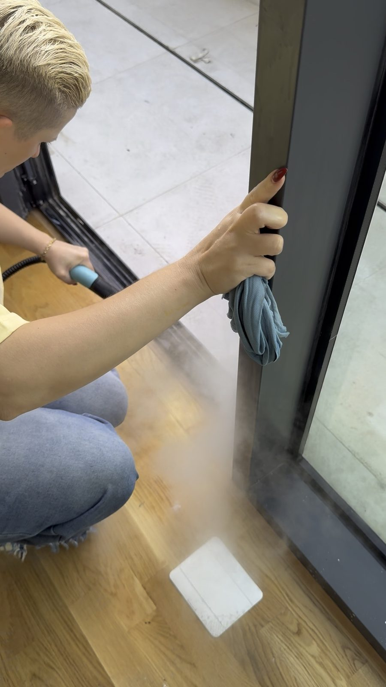

Pastërti në çdo shtëpi dhe për biznesin
Pastrim për shtëpi, zyra dhe pallate në Tiranë dhe zonat përreth. Ekip me mbi 10 vjet përvojë.
Çfarë ju duhet?
Zgjidhni shërbimin. Në çdo faqe shihni çfarë përfshihet, foto nga puna dhe si llogaritet çmimi.
Për shtëpinë
Apartamente, shtëpi dhe vila
Për biznesin
Me kontratë për pastrim të rregullt

Pse Limoni
- E shihni punën para se të vendosni
Fotot dhe videot në faqe janë nga punët tona në Tiranë, jo foto stoku.
- Çmimi shpjegohet që në fillim
Pastrim me themel për apartamente: nga 250 lekë të reja/m², vlerësim orientues. Për shërbimet e tjera, çmimi jepet pas vlerësimit.
- Divani dhe dyshekët përfshihen
Në pastrimin me themel të apartamentit lajmë divanin dhe dyshekët. Në ofertë shkruhen të gjitha.
- Plan pastrimi dhe ofertë me shkrim, pa pagesë
Mbi 50 prona të pastruara deri tani.
Krahasim fontesh (vetëm për rishikim)
Bebas Neue 400
Pastërti · Çdo · Shtëpi · Për biznesin
Oswald 700
Pastërti · Çdo · Shtëpi · Për biznesin
Barlow Condensed 700
Barlow Condensed 800
Inter 800 (fonti i vetëm sot)
Pastërti · Çdo · Shtëpi · Për biznesin